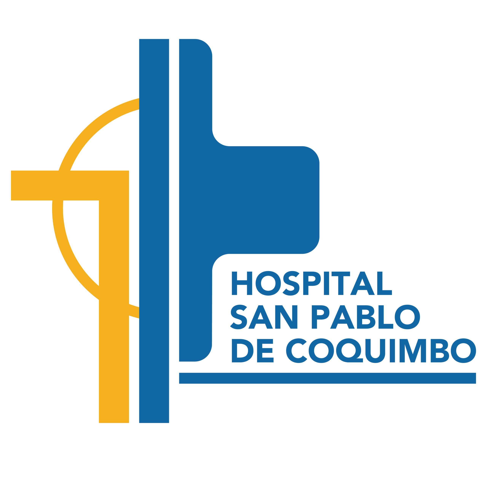
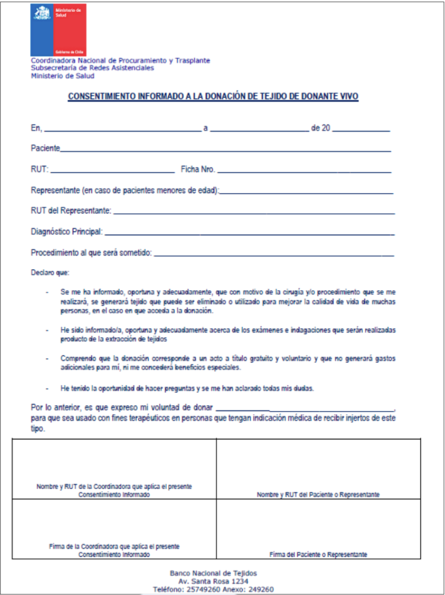
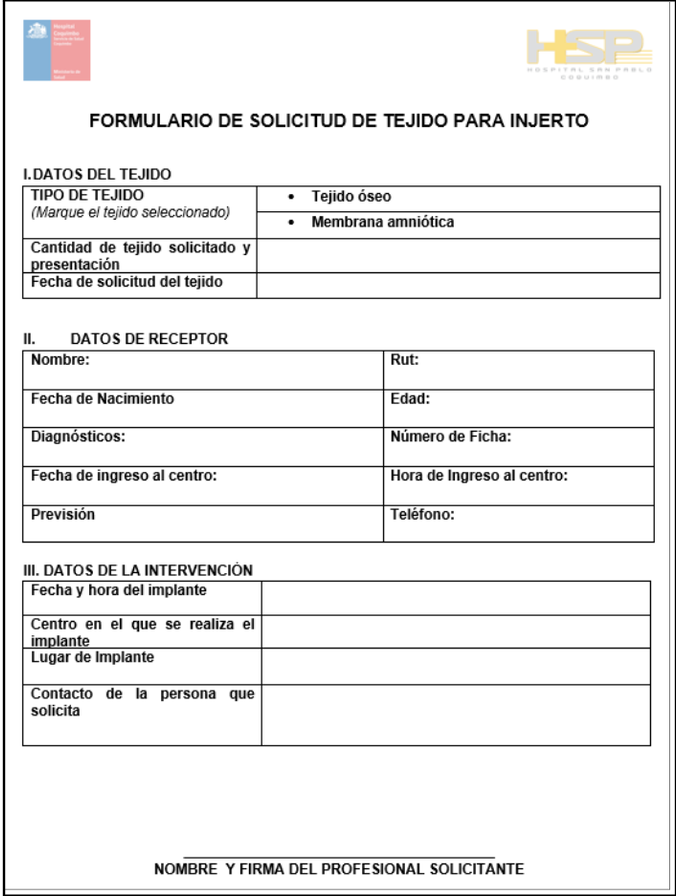

Este espacio ha sido creado para facilitar el acceso a información actualizada y herramientas de apoyo que permitan fortalecer los conocimientos y orientar a los equipos de salud en los procesos de procuramiento de órganos y tejidos. Recuerda que a través de la identificación temprana, la notificación oportuna y el trabajo colaborativo, todos podemos ser agentes de cambio, contribuyendo a generar nuevas oportunidades de vida, donde una notificación a tiempo puede marcar la diferencia y transformar vidas.
Termina el video para responder la encuesta. 🔒
La córnea es un tejido transparente de aproximadamente 1,2 milímetros de espesor, ubicado en el segmento anterior del ojo. Cumple la función de una lente natural, permitiendo el paso de la luz hacia la retina y haciendo posible la visión.
Pueden ser donantes de córneas las personas fallecidas por muerte por criterio neurológico, paro cardiorrespiratorio (PCR) de causa conocida o que presenten un pronóstico de fallecimiento inminente, siempre que cumplan con los criterios clínicos establecidos para la donación de tejido corneal.
Para determinar si una persona puede ser donante, el personal de la Unidad de Procuramiento de Órganos y Tejidos (UPOT) realiza una evaluación exhaustiva que considera la revisión de la historia clínica, el examen físico y una entrevista breve con la familia. Esto permite identificar posibles antecedentes de riesgo y descartar la presencia de enfermedades transmisibles que puedan contraindicar la donación.
Notificar inmediatamente a UPOT al número +56 9 62482159 o Anexo: 516803.
El equipo del servicio donde se encuentre el paciente posible donante de córneas, debe aplicar cuidados exclusivos en base a los criterios de inclusión, incluso previamente a la evaluación por coordinadora de Procuramiento:
- Posicionar al paciente en Semi Fowler a 30° para disminuir el edema palpebral.
- Mantener ambos párpados cerrados utilizando tela adhesiva, tomando los resguardos necesarios en relación a la remoción de la tela por el retiro traumático de pestañas.
- No usar gasas sobre los ojos, debido a que puede deteriorar la calidad de la córnea, ya que el párpado suele quedar retraído y producir úlceras oculares.
- Aplicar lágrimas artificiales o suero fisiológico 0.9% 3 veces al día. Todas las maniobras de mantención están destinadas a preservar la calidad del tejido, así como también a mantener las condiciones anatómicas del donante.
No existe una edad que, por sí sola, determine si una córnea es apta para ser donada. La calidad y viabilidad del tejido se evalúan mediante estudios especializados, entre ellos el recuento de células endoteliales, que permite determinar si la córnea reúne las condiciones necesarias para su utilización.
A nivel local, la pesquisa de potenciales donantes de córneas considera personas desde los 2 hasta los 85 años.
En el caso de los menores de 2 años, sus córneas no se consideran adecuadas para el trasplante debido a características anatómicas propias de esta etapa del desarrollo, como su mayor flexibilidad, elevada curvatura, menor diámetro y menor espesor, que dificultan su manipulación durante el procedimiento.
El trasplante de córnea está indicado para personas que presentan enfermedades, lesiones o alteraciones que afectan la transparencia, estructura o funcionamiento de este tejido, comprometiendo su visión.
Entre las principales condiciones que pueden requerir un trasplante de córnea se encuentran:
- Queratocono: La córnea se adelgaza estructuralmente y toma forma de cono, causando visión severamente distorsionada e incapacitante.
- Cicatrices Corneales: Causadas por traumas graves o infecciones profundas, dejan opacidades que impiden que la luz entre al ojo.
- Edema Corneal: Daño irreversible en las células endoteliales, responsables de bombear líquido y mantener la córnea transparente.
- Falla del limbo corneal: A menudo causada por quemaduras químicas. La conjuntiva invade y cubre la córnea, cegando al paciente.
La indicación de un trasplante debe ser evaluada por un médico oftalmólogo especialista en córnea, quien determinará si el procedimiento es necesario y adecuado para cada paciente.
El trasplante de córnea puede permitir recuperar o mejorar la visión y, con ello, contribuir a una mejor calidad de vida.
Es importante notificar inmediatamente porque existe un límite de tiempo para el procuramiento de córneas.
En condiciones en las que el donante PCR se ha mantenido en cámara de refrigeración dentro de las primeras 6 horas, post asistolia, el procuramiento se puede efectuar hasta 24 horas posteriores a la defunción del donante. Del caso contrario, el tejido corneal debe ser procurado antes de 6 horas post asistolia.
Consentimiento informado y Formulario de solicitud
No olvides mandar el certificado de implante escaneado por ambos lados al correo electrónico.
procuramiento.hspc@gmail.com

¿Qué debes saber sobre la donación de córneas?
La donación de córneas altera la apariencia física: el procedimiento se realiza de manera cuidadosa, procurando preservar la apariencia del donante.
Es realizada por profesionales especializados: el procuramiento de tejido corneal está a cargo de personal de salud capacitado.
Se realiza con respeto y dignidad: todo el proceso considera el respeto por la persona fallecida y su familia.
La donación de córneas es una oportunidad para ayudar a otras personas a recuperar o mejorar su visión.